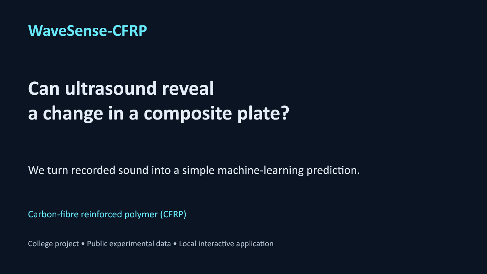
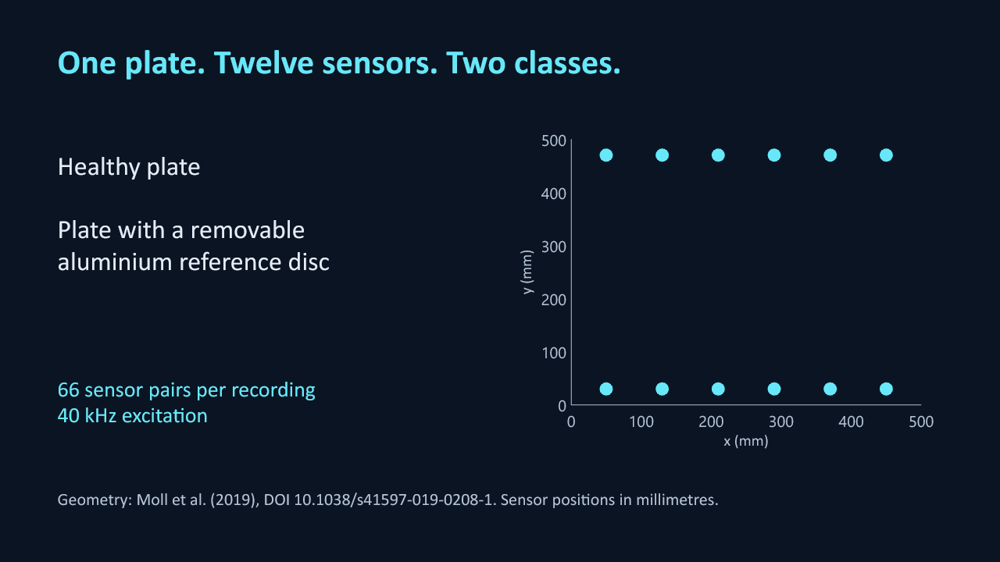
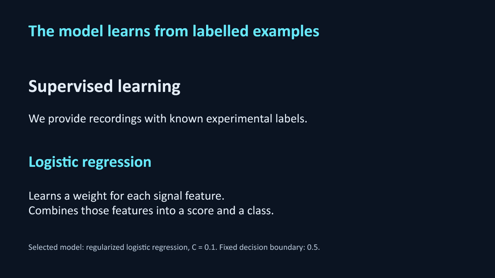
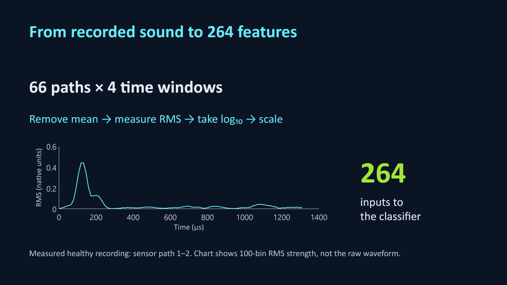
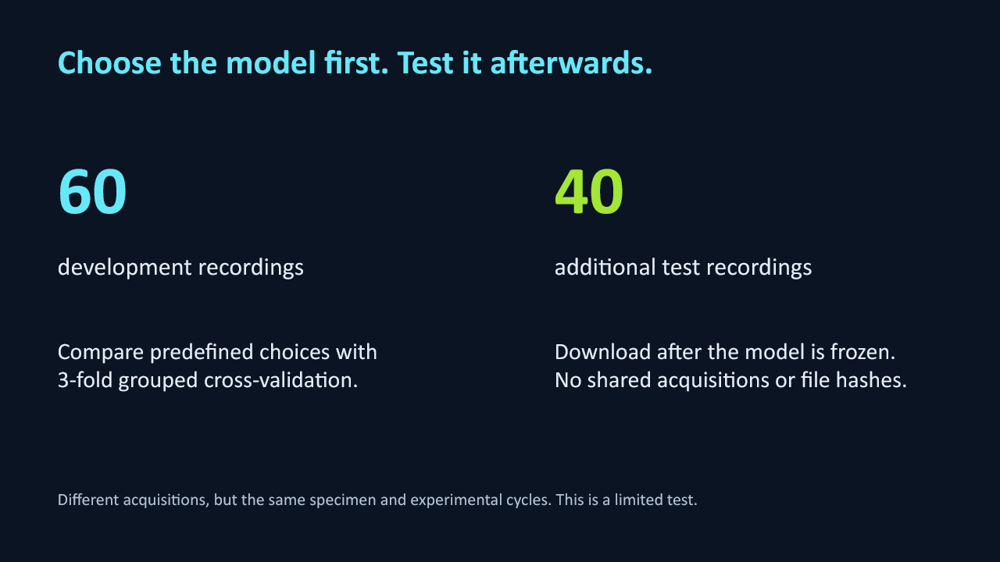
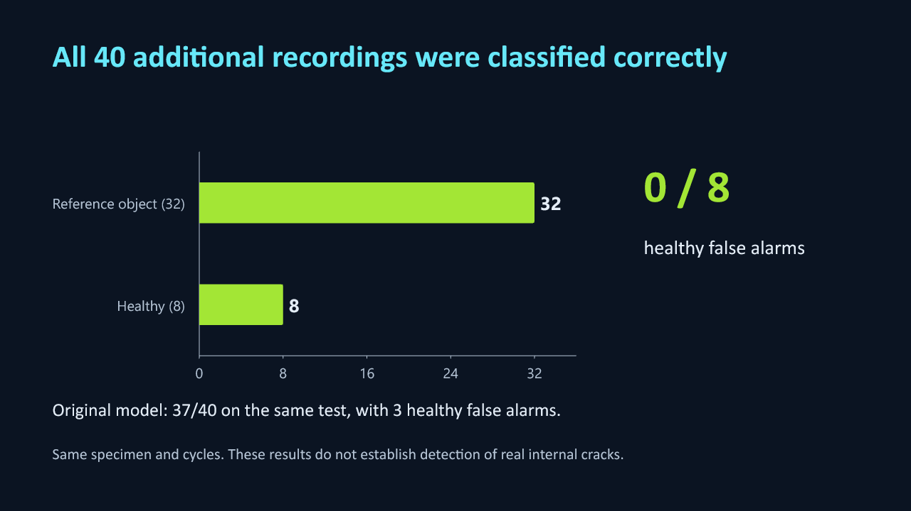
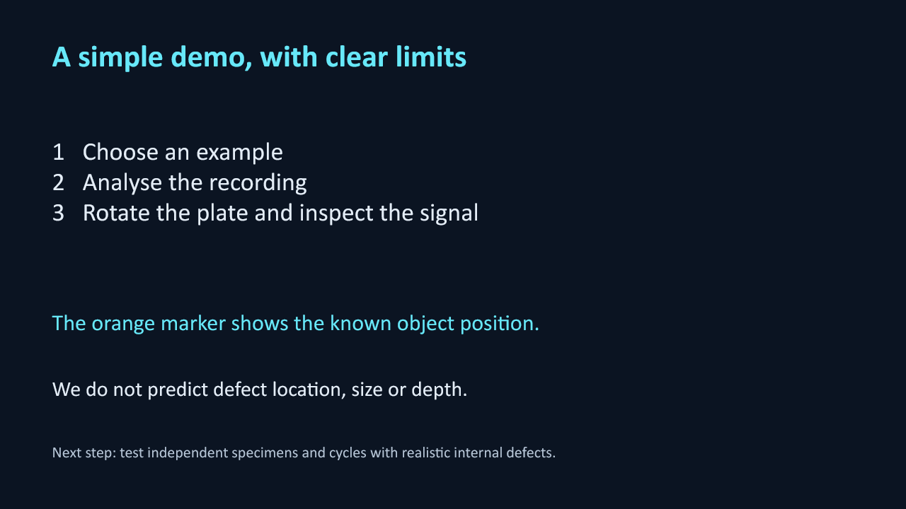

<!doctype html><html lang="en"><meta charset="utf-8"><title>WaveSense-CFRP presentation</title><style>body{margin:0;background:#0b1422;color:white;font:16px Arial}section{min-height:100vh;display:flex;align-items:center;justify-content:center;scroll-snap-align:start}img{width:100%;max-height:100vh;object-fit:contain}html{scroll-snap-type:y mandatory}nav{position:fixed;bottom:10px;right:20px;background:#14243a;padding:8px;border-radius:6px}@media print{section{min-height:0;break-after:page}nav{display:none}@page{size:landscape;margin:0}}</style><nav>Arrow keys: next / previous · F11: full screen</nav><section></section><section></section><section></section><section></section><section></section><section></section><section></section><script>let n=0;const s=[...document.querySelectorAll("section")];document.addEventListener("keydown",e=>{if(["ArrowRight","ArrowDown","PageDown"," "].includes(e.key)){e.preventDefault();n=Math.min(s.length-1,n+1);s[n].scrollIntoView();}if(["ArrowLeft","ArrowUp","PageUp"].includes(e.key)){e.preventDefault();n=Math.max(0,n-1);s[n].scrollIntoView();}});</script></html>